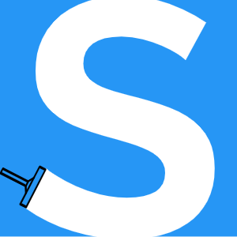
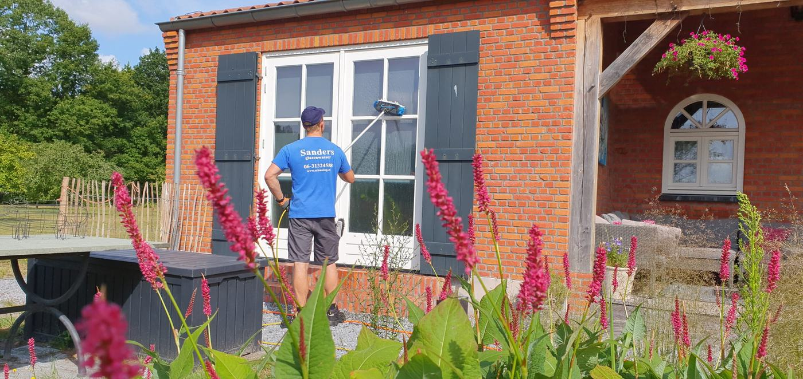
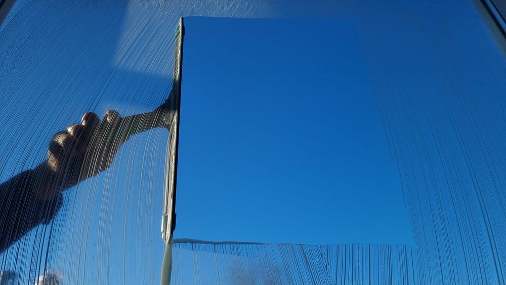

Ramen wassen
Uw ramen helder en schoon gewassen, aan de buitenzijde en de binnenzijde.

Sanders Glazenwasser Bel 06 31 32 45 88
Ook uw zonnepanelen schoon voor een betere opbrengst en uw dakgoot leeg tegen lekkages. Altijd direct contact met de glazenwasser.
Voor particulieren en bedrijven.
Uw ramen helder en schoon gewassen, aan de buitenzijde en de binnenzijde.
Uw zonnepanelen schoon voor betere opbrengst.
Uw dakgoot leegmaken om lekkages en problemen te voorkomen.
Ook mogelijk: boeiboord of daklijst wassen en een dakkapel wassen.

Om de ramen te wassen maken wij gebruik van osmosewater. Dat is water dat gefilterd is en vrij van kalk, zout en mineralen. Ook wassen we met de hand.
Bij het ramen wassen nemen we de kozijnen en vensterbanken mee. Bij het wassen van de benedenverdieping doen we ook de deuren af.
Betalen kan contant, via overmaken of via een betaalverzoek.
Wij zijn werkzaam in:
Wilt u meer informatie of heeft u een vraag? Neem gerust contact op. Een gratis offerte aanvragen kan per mail of telefoon. Binnen 8 uur wordt erop gereageerd.
Sanders Glazenwasser
Viktorsberg 19
4822 TE Breda
Telefoon 06 31 32 45 88
info@scleaning.nl
KvK 52113361
BTW NL001187608B85